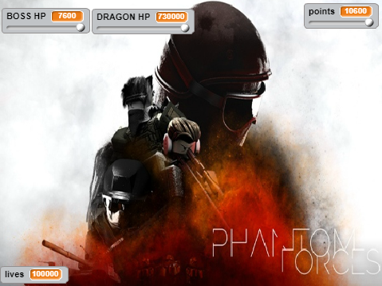
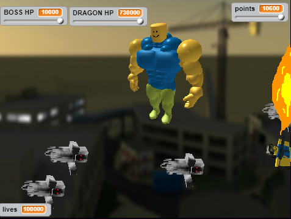
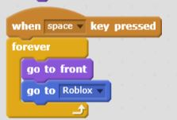
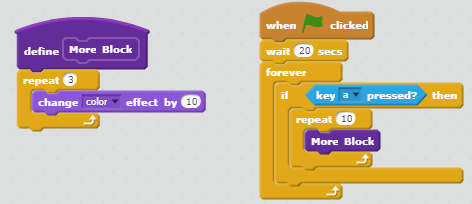

Portfolio
To check out my open-source project contributions, have a look at my club's GitHub!
Crazy Rich AsianZ Project Roblock Project
Roblock
 Game Link
Description of the Game
The mission is to beat whoever is using Minecraft to destroy Roblox. In this case, the boss and the dragon are behind the potential destruction of Roblox all together. After playing a game of Phantom Forces, they raged after losing and enslaved Minecraft to fulfill their desire of destroying Roblox.
We implemented a point system where one would gain points if he or she kills the boss and how long the player is killing them.
The randomness occurs when the ghosts and fireballs are spawning in different points of the top screen.
The difficulty of game increases after the boss's defeat where the dragon has more health and fireballs. It increases in difficulty after each boss by more health and obstacles.
The game ends when the player beats both the boss and the dragon by decreasing their lives down to 0. The player loses by getting hit by the falling obstacles after a number of times.
Reflection Piece
My partner and I made this game because we thought it would be addicting as Everwing. Everwing really inspired us by its game style.
Two successful points during the development of the game would have to be creating the homescreen and getting the the Roblox character to move with the mouse-pointer while decreasing the health of the Roblox bosses.
However, the two obstacles in the development of the game was the 1-week time limit which challenged our use of our time and getting the flamethrower to decrease the health of the bosses. We overcame these obstacles by distributing the amount of work between us and searching up and learning the algorithm to decrease the bosses' health points.
If we had more time, my partner and I would have bettered the visuals of the game and added more levels to our game. We would have added a better point and live system.
Algorithm
What makes this an algorithm is that it is a series of steps that allow the fire to be able to move in the front of the other sprites with the Roblox character rather than the Roblox character moving alone. This algorithm shapes the game since it allows the player to be able to damage the bosses by enabling his or her mousepointer to guide the fire with the character.
Notable Mention

This allows the fire to decrease the health of the boss.
More Blocks
Crazy Wealthy AsianZ
There are two math professors, Bill and Mirabelle, who began dating each other because of Bill's humor. Bill invited Mirabelle to meet his family in Japan where Mirabelle encountered criticism towards her identity as an American. Because Mirabelle did not want to find herself between Bill and his family, she left Bill only to find herself marrying him later on.
.jpg)
During the incremental development process of the program, we crafted our story based off of three decisions and built on those foundations. We also determined the settings the characters were going to be in, and we gradually plotted actions that would ultimately affect the outcomes of the story. During the iterative development process, we returned to the story and added details such as their gaze towards each other that would transition different points smoother. Additionally, we deleted and added new characters to provide a better transition that would contribute to a better outcome. A difficulty I faced was accessing the “repl” that my partner was in charge of; we resolved this dilemma by communicating with each other constantly of what times we were available. Another difficulty was adding quotation marks to our text which was quickly resolved by finding where our other apostrophes were placed and adding “\” when needed.
Organizing the scenes into functions conveys the idea of procedural abstraction since different parts of the story provides the user a mental conception of what is going on in a specific part of the program. When separated into functions, it differentiates each scene, providing a piece for the reader to craft with. The advantage is that it allows the reader to see each part of the program separately.
A story I admire is the story of Cinderella because its theme touches a bit on the movie Crazy Rich Asians. It reveals Cinderella who was insecure about her appearance and left the dance because of it and the resilience of her Prince Charming due to his attempt to find her to return back her slipper. The passion for each other resonates to me as I am still trying to find a wholesome significant other, particularly one that can cook.